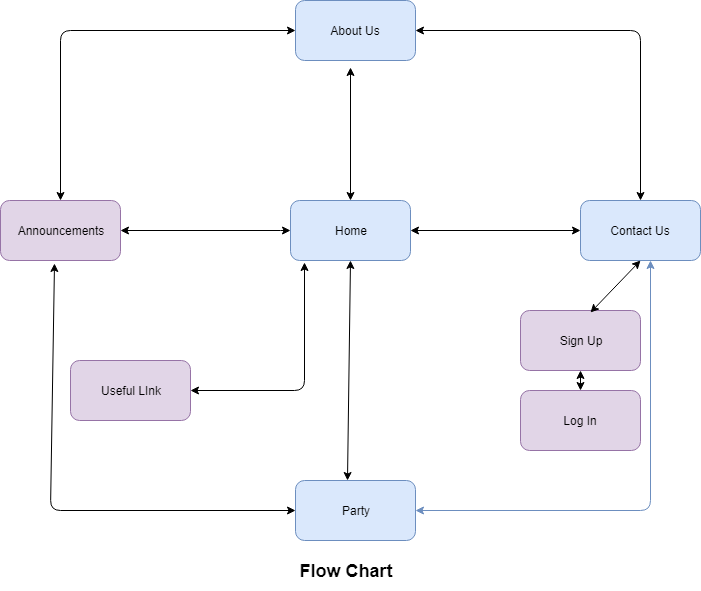

Name:Gurnihal Singh Sidhu
Login: JC513951
Enhance the business by getting it on the Internet-
More individuals will think about it.
So more individuals will go to the gathering each month.
increasingh more costumes per week.
Current Audience are on the whole ages from 35 to 50-So to pull in the youngsters,a site is one of the powerful way.
By utilizing an internet based life on the webpage will draw in progressively secondary school understudies and youthful grown-ups.
The success evaluation of CossiePlay will be based on a criteria-
Number of users signed up for membership
Feedbacks and Surveys from existing members about the events and party
Being promoted as a good site for Cosplay by Cosplay Community.
The main target are the youngsters.
The site has many engaging components which would draw in consideration of secondary school understudies and youthful grown-ups.
We additionally focus on marketing our business as the general population who come to visit our site may like it and join our gathering.
 CossiePlay